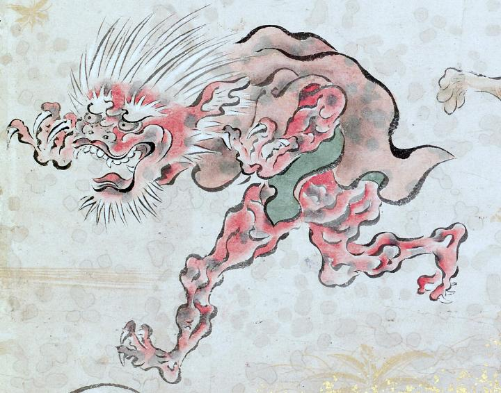

赤黒い筋肉質の体に、茶色の衣を身につけている。白髪、白眉、白ひげで、大きく目を見ひらいて何かを脅かすような仕草をしている。
著作者：吉光／出典：親書誌：U426_nichibunken_0057：百鬼ノ図；ヒャッキノズ／日付：2006／資源識別子：U426_nichibunken_0057_0004_0001
Copyright (c)2010- International Research Center for Japanese Studies, Kyoto, Japan. All rights reserved.